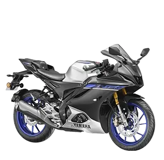

About Us
Yamaha Motor Company is a globally recognized brand known for its commitment to innovation,quality,
and performance across a wide range of products, most notably motorcycles, marine products,and power
equipment. Founded on July 1, 1955, as a spin-off from Yamaha Corporation (a leader in musical
instruments), Yamaha Motor has since grown into one of the world’s leading manufacturers of motorized
products. Headquartered in Iwata, Shizuoka, Japan, Yamaha Motor’s journey began with the way release
of its first motorcycle,the YA-1, a 125cc two-stroke bike that went on to win Japan's prestigious
Mount Fuji Ascent Race. This victory not only marked the birth of a strong motorcycle legacy but
also signaled Yamaha’s determination to lead through performance and engineering excellence.
Products

